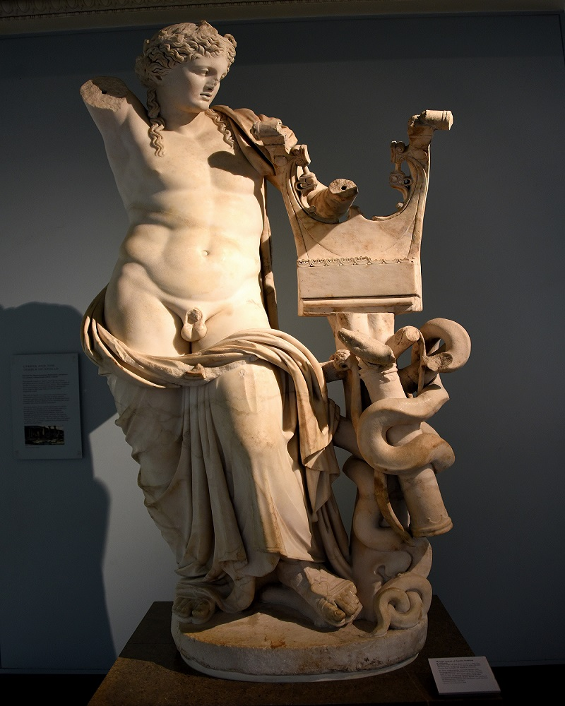

En 2004 el Museo de Arte de Cleveland compró una estatua de bronce del tipo del Apolo Sauróctono, que había pertenecido a una colección particular alemana. A la figura le faltan el árbol y la mayor parte de los brazos.
Leer mas...Tiene separados del cuerpo principal de la estatua un fragmento de una mano y el reptil (con escaso parecido al representado en las copias romanas). Algunos estudiosos consideran que este bronce podría ser el original de Praxíteles.
El Apolo Sauróctono era una estatua de bronce y de tamaño natural realizada por Praxíteles en el siglo IV a. C. Es mencionada por Plinio y representaba a Apolo en su adolescencia a punto de herir a un pequeño lagarto que trepaba por el tronco de un árbol.
Aparece representado en monedas de Nicópolis. Hay varias copias de este original perdido, entre las que destacan la de los museos Vaticanos y la del museo del Louvre.
La copia que se encuentra en el museo del Louvre anteriormente estaba en Italia, en Villa Borghese. Es de mármol y en 1807 pasó a las colecciones francesas. En la época romana debieron de ser muy abundantes las copias que se hicieron del original de Praxíteles, como muestra un epigrama de Marcial